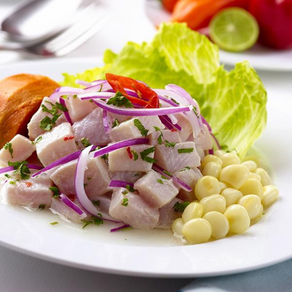
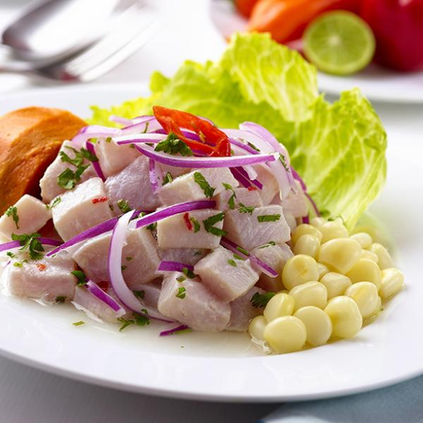

mi nombre :
-Pedro Luis Bernaolas Echevarria
Mi edad:
Tengo 13 años
Cosas favorita
Mi opening favorito:
Esta es el opening para hacer para cuando hago mis proyectos y tareas
Mi comida favorita:
Mi comida favorita es el ceviche
-Pedro Luis Bernaolas Echevarria
Tengo 13 años
Mi opening favorito:
Esta es el opening para hacer para cuando hago mis proyectos y tareas
Mi comida favorita:
Mi comida favorita es el ceviche
-Mi Primer Certificado en el mundo de la programacion
-Lo consegui en curso de programacion basica en Platzi
-Fue otorgado el 14 de febreo
bueno eso es todo sobre mi pagina web espero que les haya encantado ,espero que tengan un buen dia y adios :)